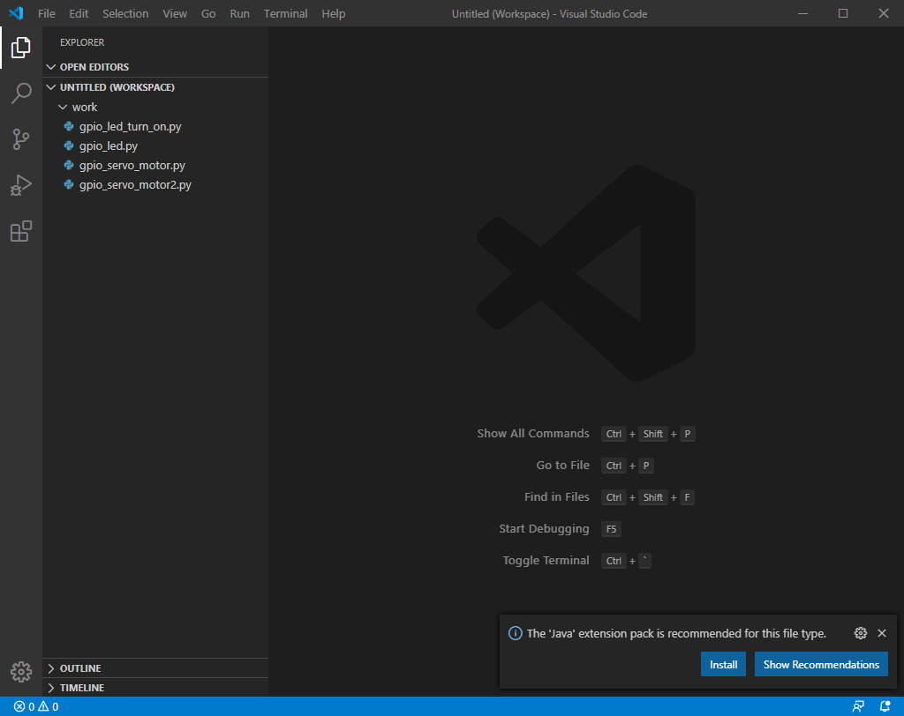
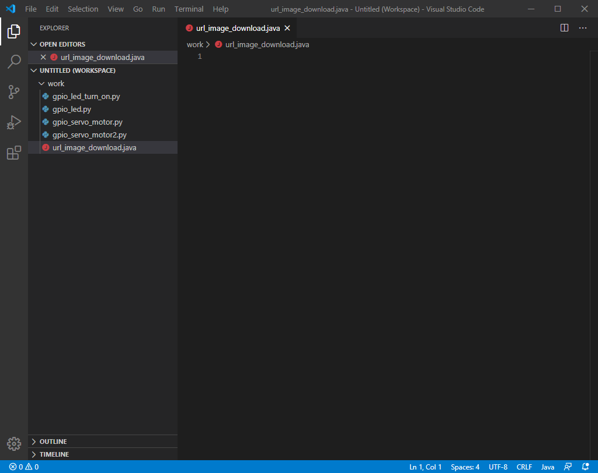
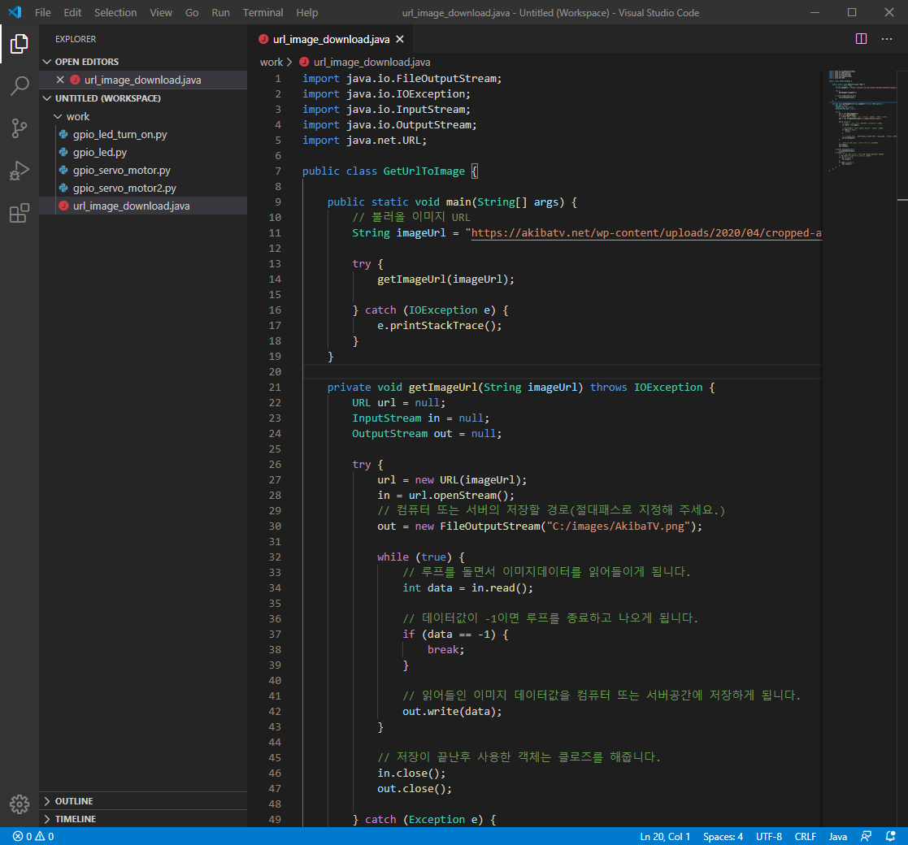

JAVA에서 웹페이지 이미지 URL 다운로드후 저장하기
안녕하세요.
이번에 소개할 내용은 JAVA에서 웹페이지 이미지 URL 다운로드후 저장하기 입니다.
웹페이지 크롤링 프로그램을 개발하시거나
특정 URL을 입력하면 해당 URL의 이미지를 자동으로 다운로드후
PC 또는 서버에 저장이 되게끔 하는것으로 사람이 일일이 수작업으로 다운로드하지 않고
자동으로 다운로드를 할수있는 기능을 개발하는게 가능합니다.
소스코드를 참고를 하셔서 좀더 응용을 하시게 되면 자신만의 멋진 프로그램으로 개발하는게 가능하게 될것입니다.
자바개발은 이클립스로 개발을 해야만 사람들이 많이 알면서 편하지만 이번에는 소스코드만 공개를 하는것이기에
좀더 자세한 내용에 대해서는 이클립스 환경에 대한 소개후 진행하도록 하겠습니다.
그럼 개발을 하기위해 Visual Studio Code(비주얼 스튜디오 코드)를 우선 실행을 해주시기 바랍니다.

Visual Studio Code(비주얼 스튜디오 코드)를 실행을 하셨으면
파일명을 url_image_download.java 으로 지정하시고 파일을 추가해 주시기 바랍니다.

그럼 이제 아래의 소스코드를 작성해 주시기 바랍니다.
1
2
3
4
5
6
7
8
9
10
11
12
13
14
15
16
17
18
19
20
21
22
23
24
25
26
27
28
29
30
31
32
33
34
35
36
37
38
39
40
41
42
43
44
45
46
47
48
49
50
51
52
53
54
55
56
57
58
59
60
61
62
63
64
65
| import java.io.FileOutputStream;
import java.io.IOException;
import java.io.InputStream;
import java.io.OutputStream;
import java.net.URL;
public class GetUrlToImage {
public static void main(String[] args) {
String imageUrl = "https://playneko.com/wp-content/uploads/2020/04/cropped-avatarimg_user1.png";)
try {
getImageUrl(imageUrl);
} catch (IOException e) {
e.printStackTrace();
}
}
private void getImageUrl(String imageUrl) throws IOException {
URL url = null;
InputStream in = null;
OutputStream out = null;
try {
url = new URL(imageUrl);
in = url.openStream();
out = new FileOutputStream("C:/images/AkibaTV.png");
while (true) {
int data = in.read();
if (data == -1) {
break;
}
out.write(data);
}
in.close();
out.close();
} catch (Exception e) {
e.printStackTrace();
} finally {
if (in != null) {
in.close();
}
if (out != null) {
out.close();
}
}
}
}
|
